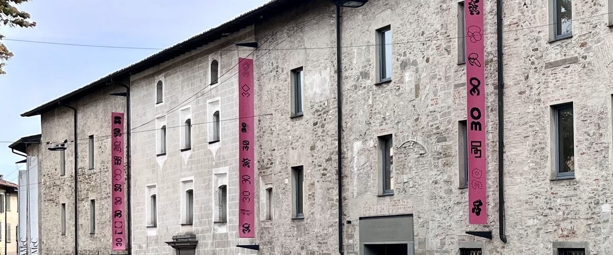

LA GALLERIA
La Galleria d’Arte Moderna e Contemporanea di Bergamo è stata inaugurata nel 1991.
Modello virtuoso di gestione condivisa pubblico-privato, il museo ha sede negli spazi dell’antico Monastero delle Dimesse e delle Servite, il cui restauro è stato realizzato tra la fine degli anni Ottanta e i primi anni Novanta dallo Studio Gregotti Associati.
La programmazione diversificata l’ha resa negli anni uno spazio poliedrico in grado di coinvolgere pubblici diversi con attività mirate. Con i suoi 1500 metri quadrati di superficie espositiva, la GAMeC è un luogo che accoglie l’arte moderna e contemporanea in tutte le sue forme.
Mostre temporanee personali e collettive di artisti internazionali e un ricco calendario di attività collaterali pensate per diverse tipologie di pubblico sono il punto di forza della politica culturale della Galleria, che si pone come luogo dinamico di confronto, approfondimento e integrazione culturale, in continua evoluzione.
Ricevendo donazioni e promuovendo acquisizioni, la GAMeC sviluppa e promuove la collezione d’arte moderna e contemporanea della città di Bergamo, che annovera opere di autori del Novecento italiano e internazionale e lavori di artisti contemporanei.
La GAMeC è inoltre promotrice e fondatrice di AMACI – Associazione dei Musei d’Arte Contemporanea Italiani e collabora attivamente con alcuni tra i più importanti musei e centri d’arte contemporanea nel mondo.